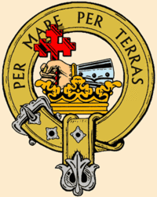
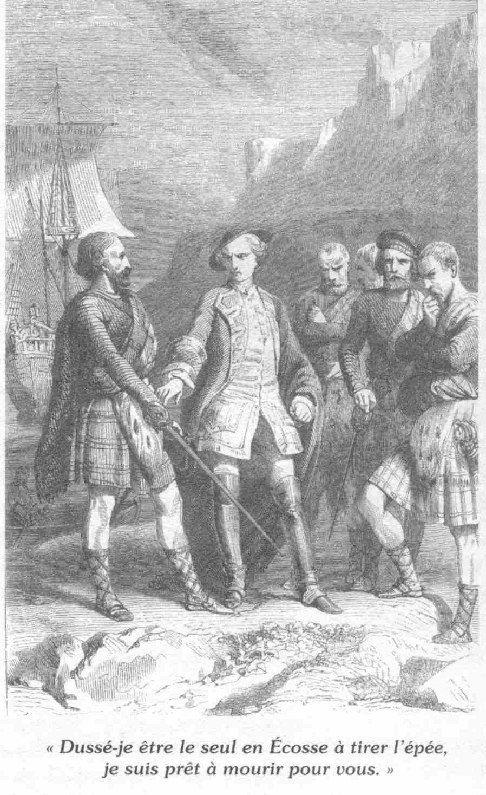

An Fhideag Airgid
The Silver Whistle
Clan Donald take up arms for the Prince
Tune 1 (midi)
Tune 2 (mp3)
Sequenced by Christian Souchon

| ‘Who will play the silver reed (for pipe chanter), when the Son of my King is coming home’ asks this song which was evidently composed at the very beginning of the '45. While the ship in which Prince Charles had crossed from Eriskay lay in Loch nan Uamh, Moidart, it was the sound of the bagpipe from the men of Clan Donald - that encouraged the young prince to proceed with his adventure and other clans to join the Stewart cause . |
'Qui veut jouer de la flute d'argent (désignant la flute de la cornemuse), alors que le Fils de mon Roi rentre chez lui' demande le barde dans ce chant composé, à l'évidence, au tout début des événements de 1745. Lorsque le bateau dans lequel le Prince a traversé le détroit d'Eriskay jette l'ancre dans le Loch nan Uamh, devant Moidart,
c'est le son des cornemuses des clans composant le Clan Donald - qui encourage le jeune prince à poursuivre son aventure et les autres clans à embrasser sa cause
.
|

|
0. Who will play the silver whistle?
Ho ro hu a hu il o Hi ri hu o, hi ri hu o 1. Who says that I would not play myself? 2. Who says that he wouldn't play? 3. Sing shall the McLeods and the Mackenzies! 4. My King's son to sea is going. 5. My King's son is coming to Scotland 6. On a large ship o'er the ocean. 7. On a great ship with three masts of silver 8. On the handsome vessel with the silver rigging 9. Not an untidy, not an ugly rigging: 10. With ropes so light of French silk woven. 11. Golden pulleys on each end. 12. When my king's son ashore has landed, 13. He'll welcome the Alan's son (Ranald McD.ClRan.) 14. Who comes at the head of a troop from Glengarry 15. And Big MacDonald come from Keppoch, 16. And Dark MacDonald from Lochaber, 17. With Clan McDonal he'll come to the wedding! 18. The news will spread all over the land, 19. And no one will be displeased 20. When my King's son comes back home. 21. No girdle scones will food be for him 22. But loaves of bread a cook be baking. 23. Let us hear the beer fill the mug. 24. Let us hear the wine fill the glass. 25. And whisky be three finger deep 26. And strong brandy from the Lowlands. 27. And let us challenge the English. 28. Let us send home King George, 29. Let's send him back to Hanover. 30. Young Charles with the blue bewitching eyes 31. Welcome, welcome, may you be desired and famous 32. I shall see you, my darling. 33. May there be fiddling the choicest music before you 34. And the harp will play and all the attendance 35. Will dance by turns on the floor. 36. Who will play the silver whistle? 37. Who'd say that I'd not play it myself? |
0. Cò sheinneas an fhìdeag airgid?
Ho ro hu a hu il o Hi ri hu o, hi ri hu o 1. Cò theireadh nach seinninn fhìn i? 2. Cò theireadh nach seinneadh, seinneadh, 3. Sheinneadh i Mac Leòid 's Mac Coinnich! 4. Mac mo rìgh-s' dol gu fairge, 5. Mac mo Rìgh-s’ air tighinn a dh’Alba 6. Air long mhóir air bhàrr na fairge, 7. Air lang mhar nar tri chrann airgid 8. Air luing rìomhaich nam ball airgid 9. Chan bhuill ghaoisne, cha bhuill cainbe, 10. Sreanganan dhan t-sìoda Fhrangach, 11. Ulagan òir air geann ceann dhiubh, 12. Nuair thig mac mo Rìgh gu fearann, 13. A' cur fàilt' air Mac 'ic Ailein, 14. 'S air ceann-fheadhna Ghlinne Garann, 15. 'S air Mac Dhòmhnaill Mhór na Ceapaich, 16. 'S air Mac Dhòmhnaill Dhuibh Loch Abar, 17. Nìtear le Clann Dòmhnuill banais! 18. Fear taighe nach fhaighte brùideil, 19. 'S nach bi luchd-tathaich dheth diùmbach. 20. Nuair thig mac mo Rìgh-sa dhachaidh, 21. Cha b'e biadh dha breachdan teine, 22. Ach bacastair gu dèanamh arain, 23. 'S fuaim na beòire 'dol 'sa channa, 24. Fuaim an fhìona dol 'sa ghlanaidh, 25. 'S uisge beatha na treas tarraing, 26. 'S branndaidh chruaidh a nuas a Gallaibh. 27. 'S chuireadh iad na Goill gu'n dùbhlainn, 28. 'S chuireadh iad Righ Seòras dhachaidh, 29. Do Hanobhar a-null fairis. 30. Tèarlach òg nan gormshùil meallach, 31. Fàilte, fàilte mùirn is cliù dhut, 32. Gura h-e mo chion 's mo rùn thu, 33. Fidhleireachd is rogha ciùil dhut. 34. 'S clàrsach bhinn 's a cruinn 'gan rùsgadh. 35. Ruidhle mu seach air an ùrlar. 36. Cò sheinneas an fhideag airgid? 37. Cò chanadh nach seinninn fhìn i? |
0. Qui veut jouer de la flute d'argent?
Ho ro hu a hu il o Hi ri hu o, hi ri hu o 1. Pourquoi donc n'en jouerai-je pas moi-même? 2. Qui refuserait d'en jouer, d'en jouer? 3. Pas les McLeods, ni les Mackenzies! 4. Le fils de mon Roi vient de s'embarquer. 5. Le fils de mon Roi s'en vient en Ecosse. 6. Il s'apprête à traverser l'océan 7. Sur un grand voilier aux trois mâts d'argent. 8. Un joli trois-mâts au gréement d'argent, 9. Non pas un gréement agencé trop vite 10. Les cordages sont tout de soie sont tissés 11. Des poulies en or sont au bout des vergues. 12. Quand le fils du Roi mettra pied à terre, 13. Il sera salué par le fils d'Alan 14. Conduisant les hommes de Glengarry. 15. Le Grand McDonald viendra de Keppoch, 16. McDonald le Brun, lui, de Lochaber 17. Tous les McDonalds seront de la noce! 18. Toutes les fermes seront informées 19. Afin que chacun puisse se réjouir 20. Quand il viendra voir le fils de mon Roi! 21. Des crêpes seraient de lui trop indignes. 22. Boulanger, au four, fais ton meilleur pain. 23. Que les bocks partout de bière on emplisse, 24. Que l'on emplisse les verres de vin, 25. Ou bien de whisky, profond de trois ongles, 26. Ou du fort brandy venant des Lowlands. 27. Allons à présent défier l'Anglais! 28. Renvoyons chez lui l'ignoble roi Georges! 29. Il peut désormais rentrer à Hanovre. 30. Jeune Charles aux yeux bleus si charmants, 31. Salut, hôte autant désiré qu'illustre! 32. Je te vois enfin, mon jeune champion. 33. Jouez violons vos airs les plus vifs! 34. Harpes , résonnez, tandis qu'à l'entour 35. Chacun va pouvoir gambader sur l'aire. 36. Qui veut jouer de la flute d'argent? 37. Et pourquoi n'en jouerai-je point moi-même?
Transl. Christian Souchon (c) 2005
|
|
Whereas the first Chiefs mentioned in the song denied their support to the Prince (the McKenzies of Kintail except those raised by the Chief's wife, Lady Fortrose, the McLeods who fought in the Hanoverian forces, except those of Bernera, Muiravonside, Raasa, Glendale and Brea), the
McDonald Clans
-except McDonald of Sleat-
immediately took up arms for the Stuart cause
:
Mac 'ic Ailein : Chief Ranald McDonald of ClanRanald , McDonald of Glengarry : their Chief, Alastair, was captured in 1745 en route to France as he was carrying an address of support to Charlie and remained imprisoned till 1747. His brother, Angus or Aeneas, led 600 clansmen in all battles from Highbridge to Culloden. Mac Dhomnuil Mhor na Ceapaich: Chief Alexander McDonald of Keppoch who immediately declared for Charles on his arrival, prompted many Chiefs to raise men and died for him at Culloden. McDonald Dubh of Lochaber : reference unclear. Clann Dòmhnuill : Clan Donald as a whole -Only McDonald of Sleat did not "come to the wedding". |
Si les chefs nommés en premier dans le chant refusèrent de soutenir le Prince (les McKenzie de Kintail sauf ceux recrutés par l'épouse du chef, Lady Fortrose, les McLeod qui combattirent dans le camp Hanovrien sauf ceux de Bernera, Muiravonside, Raasa, Glendale et Brea), les
Clans McDonald
, à l'exception des McDonald de Sleat
se rangèrent immédiatement du côté des Stuarts:
Mac 'ic Ailein : le chef Ranald McDonald de ClanRanald , McDonald of Glengarry :leur chef, Alexandre, fut arrêté en 1745 alors qu'il se rendait en France pour transmettre à Charles Edouard une motion de soutien. Il resta en prison jusqu'en 1747. Son frère Angus -ou Enée- participa à la tête de 600 hommes à toutes les batailles, depuis Highbridge jusqu'à Culloden. Mac Dhomnuil Mhor na Ceapaich :le Chef Alexandre McDonald de Keppoch qui se rallia immédiatement à Charles, dès son arrivée, et mourut pour lui à Culloden. McDonald Dubh of Lochaber : difficile à identifier. Clann Dòmhnuill :le Clan Donald dans son ensemble . Seul le clan McDonald de Sleat ne "fut pas de la noce". |
|
Next day
Young Clanranald
appeared with three kinsmen and they were carried on board where a large tent was erected. Of the conversation between Clanranald and the Prince which lasted for three hours in the Prince's cabin no account is available, but it is probable that the young chieftain's objections were overcome before he rejoined his companions. Another version is given by J.J.E. Roy (1794-1872) in "Le dernier des Stuart": Young Clanranald and Kinlochmoidart were conjured by the Prince to assist him, but they positively refused, until Charles observed the sympathy expressed by the demeanour of a young Highlander standing nearby. When he heard his chief refusing to take up arms, his eyes sparkled and he grasped his sword. Charles asked him "Will not you assist me?" The answer was "I will! I will! Though no other man in the Highlands should draw a sword, I am ready to die for you". Charles exclaimed he only wished that all the Highlanders were like him. Stung with the prince's observation, the two McDonalds instantly declared that they would fight in support of the house of Stuart, and would endeavours to rouse their countrymen to arms. Accordingly, on the 22d of July, Young Clanranald, attended by Allan McDonald, a younger brother of Kinlochmoidart, was despatched with letters from the prince, to Sir Alexander McDonald and the laird of McLeod, to solicit the aid of their services. These powerful chieftains, who could raise nearly 2,000 men
During his absence, another McDonald, Hugh McDonald, brother of the laird of Morar, went on board with Lochiel's brother, Dr Archibald Cameron. Both urged in vain the Prince to abandon his project and return to France, soon accompanied by young Clanranald who brought back an absolute refuse from Sir Alexander McDonald and the laird of McLeod. But the stubborn young man persisted in his resolution. |
Le lendemain le
Jeune Clanranald
se présenta accompagné de deux parents et fut transporté à bord du bateau où une grande tente avait été dressée. De son entretien de 3 heures avec le Prince rien n'a filtré, car il eut lieu dans la cabine, mais il est probable que celui-ci était parvenu à réduire à néant les objections du jeune chef avant qu'il rejoigne ses compagnons. J.J.E. Roy (1794-1872) donne une autre version dans son livre, "Le Dernier des Stuarts".Le jeune Clanranald et Kinlochmoidart furent conjurés par le Prince de l'aider, mais ils refusèrent catégoriquement jusqu'à ce que Charles remarque le comportement d'un jeune Highlander qui assistait à la scène. Lorsqu'il entendit que son chef refusait de prendre les armes, ces yeux jetèrent des éclairs et sa main serra son épée. Charles lui demanda "Et toi, tu veux bien m'aider?" Et sa réponse fut "Bien sûr, bien sûr! Dussé-je être le seul en Ecosse à tirer l'épée, je suis prêt à mourir pour vous!" Charles s'écria qu'il voudrait que tous les Highlanders lui ressemblent. Piqués au vif, les deux McDonald déclarèrent aussitôt qu'ils combattraient pour la Maison des Stuart et qu'ils s'efforceraient d'amener leurs compatriotes à en faire de même. En conséquence, le 22 juillet, le Jeune Clanranald, accompagné d'Allan McDonald, un frère cadet de Kinlochmoidart se mettait en route, porteur de missives du Prince adressés à Alexander McDonald et au Seigneur de McLeod pour solliciter leur aide et leurs services. A eux deux ils pouvaient lever une armée de 2000 hommes.
Pendant leur absence, un autre McDonald, Hugues McDonald, frère du seigneur de Morar, monta à bord avec le frère de Lochiel, le Dr Archibald Cameron. Tous deux s'employèrent en vain à presser le Prince d'abandonner son projet et de rentrer en France, bientôt soutenus par le jeune Clanranald qui revenait porteur d'un refus catégorique de la part de Sir Alexander McDonald et du seigneur de McLeod. Mais l'obstiné jeune homme persista dans sa résolution. |
| Click to know more about CLAN DONALD |

Though no other man in the Highlands should draw a sword, I am ready to die for you!